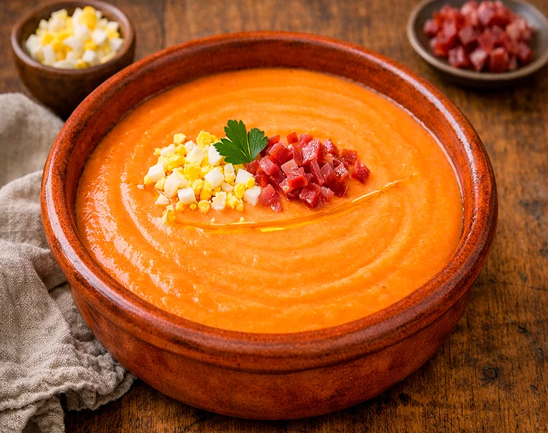

Receta saludable
Salmorejo ligero con huevo duro
Un salmorejo fresco, suave y más ligero de lo habitual, elaborado sin pan y acompañado de huevo duro para conseguir un plato sencillo, nutritivo y perfecto para los días de calor.
Ingredientes
- 1 kg de tomates maduros
- 2 huevos duros
- 1 diente de ajo pequeño
- 30 ml de aceite de oliva virgen extra
- 1 cucharada de vinagre de Jerez o de manzana
- Sal
Preparación
- Cuece los huevos, enfríalos y resérvalos.
- Lava y trocea los tomates.
- Tritura los tomates con el ajo, el aceite, el vinagre y una pizca de sal hasta obtener una crema fina.
- Si quieres una textura más suave, pasa la mezcla por un colador fino.
- Deja enfriar en la nevera al menos 30 minutos si tienes tiempo.
- Sirve el salmorejo bien frío y añade por encima los huevos duros picados.
- Ajusta de sal y termina con un hilo de aceite si te apetece.
Consejo práctico
Si los tomates no están muy dulces, añade una pizca mínima de edulcorante o deja reposar el salmorejo en frío para que el sabor se redondee mejor.